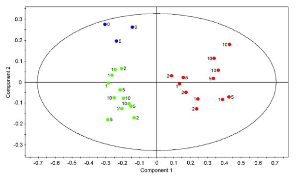

Difference between PLS & OPLS
“두 group의 차이를 분석할 때 더 명확하게 구분 가능함”
The utilization of class memberships in PLS-DA allows the algorithm to better expose separations between classes in scores space. However, variation not directly correlated with Y is still present in the scores. This complicates interpretation of PLS-DA scores and loadings plots, especially as the number of classes increases [43]. Orthogonal Projections to Latent Structures (OPLS) addresses this interpretability problem by incorporating an Orthogonal Signal Correction (OSC) filter [49-51] into a PLS model, effectively separating Y -predictive variation from Y -uncorrelated variation in X: